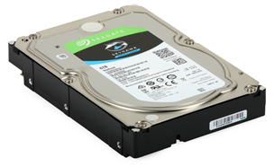

Dysk twardy (HDD)
Opis: Dysk twardy to urządzenie służące do przechowywania danych, takich jak system operacyjny, programy i pliki. Jego główną cechą jest pojemność (np. 1TB, 2TB) oraz prędkość obrotowa (RPM). HDD ma wpływ na czas uruchamiania systemu i ładowania plików. Przykłady to Seagate Barracuda 2TB czy Western Digital Blue 1TB.
